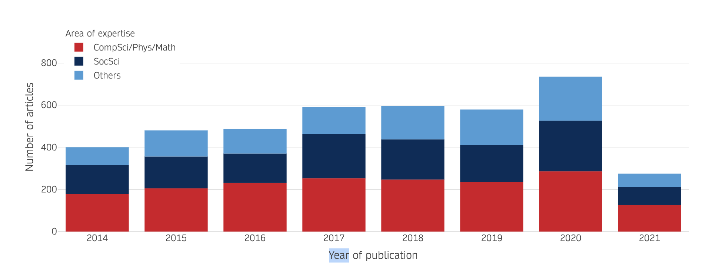

This prototype visualisation has been created for user testing in relation
to the PEARL project.
It is considered a possible direct replacement for histogram charts
currently adopted in the PEARL PoC, namely:

The intention of this testing phase is to focus on user functionality, not
colour branding. Hence, the majority of colour styling has been removed
from this visualisation, and replaced by gray-scale design. Colour has
only been adopted in relation to some user interaction with the chart.
Some basic functionality has been provided, namely:
-
User can modify the chart's layout by selecting/activating one of the
three radio buttons located to the top-right corner of the interactive
chart.
-
Users may hover over any data rectangle present on the chart to
highlight all data rectangles in the same 'layer/catgeory'.
-
Users may then click on a rectangle to make the styled highlighting
persistent.
-
Click a second time on the same rectangle to remove all highlighting
and return the chart to the original view.
When considering your feedback, focus on teh following points:
-
User Functionality: what functionality is currently not present
that you would like to be provided;
-
Tooltip Content: what data content/value-added information
would be useful on the tooltip;